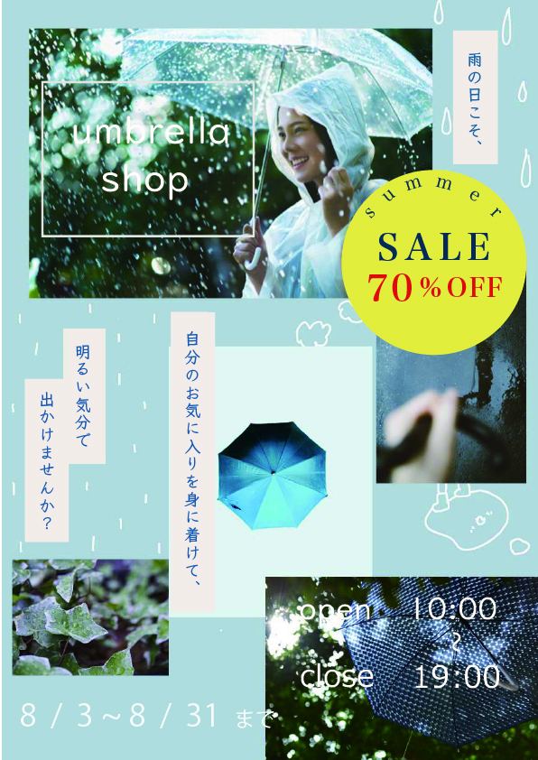

Graphic Works
Poster Design
雨の日でも前向きな気分になれるような、ショッププロモーション用のポスターデザインです。

作品名
umbrella shop
概要
雨の日の楽しさや情緒を、複数の写真と情報を組み合わせて表現したショッププロモーションポスターです。 キャンペーン訴求と世界観づくりの両立を意識して制作しました。
ターゲット
20〜40代の男女を中心に、日常の中でも気分が上がるアイテムやショップ体験を求める層を想定しています。
課題
雨に対してネガティブな印象を持つ人も多く、商品自体への関心につながりにくい点が課題でした。 また、情報量が増えると紙面が雑然と見えやすいため、整理された構成が必要でした。
デザイン意図
写真をコラージュのように配置し、雨の日の空気感や楽しさが伝わるような紙面構成にしました。
ブルーを基調に全体のトーンを揃えつつ、SALEの円形モチーフをアクセントとして配置することで、視線が自然に情報へ流れるよう設計しています。 要素が多くても整理されて見えるよう、余白とサイズ感のバランスを細かく調整しました。
工夫した点
視線誘導を意識し、SALE・商品・コピーの順に情報が伝わる構成にしています。 雨粒やイラストのあしらいを取り入れながらも、全体の統一感が崩れないようトーンを揃えました。